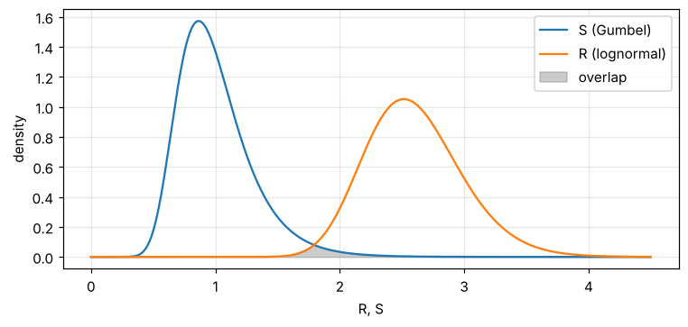
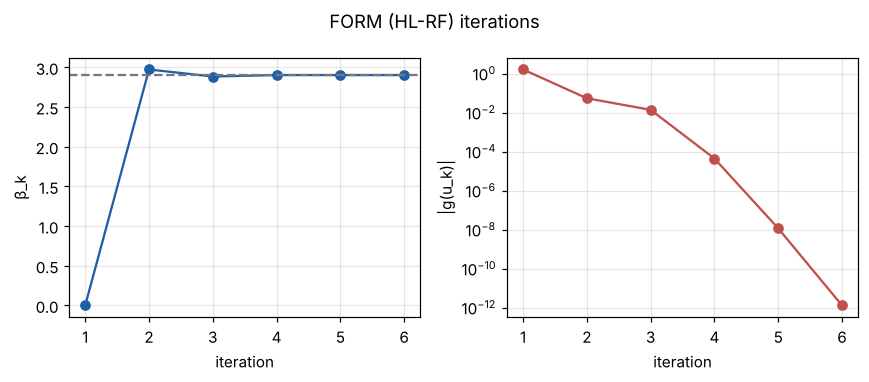
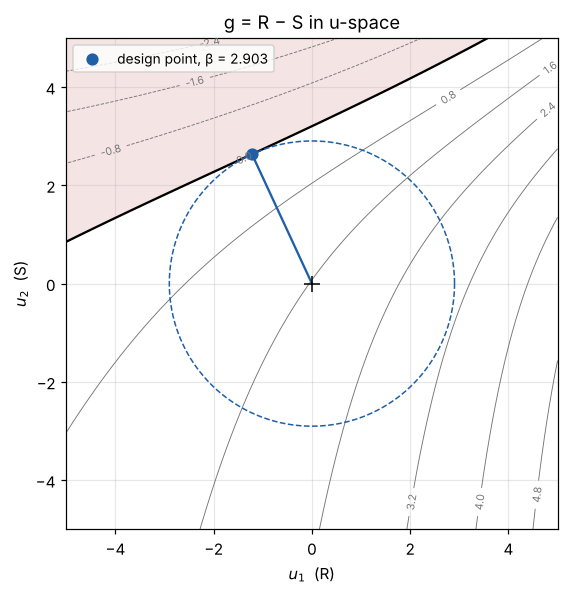
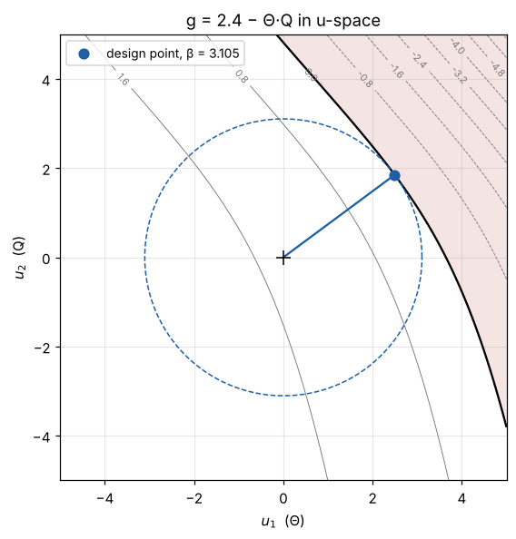
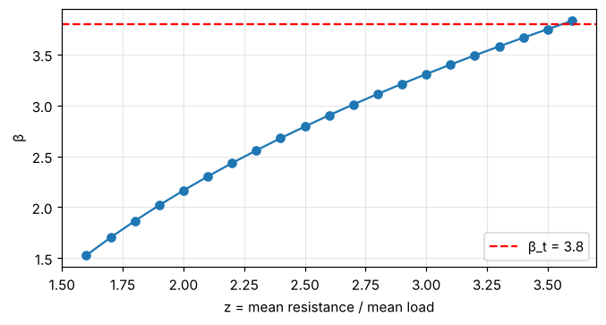

14. Lesson 2 — The reliability index and FORM#
A limit state function \(g(\mathbf X)\) separates safe (\(g > 0\)) from failed (\(g \le 0\)) states. The probability of failure is
an integral nobody wants to evaluate directly. The first-order reliability method (FORM) replaces it by a geometric problem: in the space of independent standard-normal variables \(\mathbf U\), find the point of the failure surface \(g(\mathbf u) = 0\) that is closest to the origin — the design point \(\mathbf u^*\). Its distance
is the reliability index that the Eurocodes use as the target (\(\beta_t = 3.8\) for 50 years, consequence class 2).
This lesson works through two-variable examples so that every step can be drawn.
import os
import sys
import numpy as np
from scipy.special import ndtr
try:
import codecal as cc
except ImportError:
sys.path.insert(0, os.path.abspath('..'))
import codecal as cc
from codecal import plots
from codecal.plots import Figure
FIG = 'figures'
os.makedirs(FIG, exist_ok=True)
def save(fig, name):
"""Save a figure next to the lesson and show it (inline in Jupyter/Spyder)."""
fig.savefig(os.path.join(FIG, name), dpi=150, bbox_inches='tight')
try:
from IPython.display import display
display(fig)
except ImportError: # plain python: the PNG in figures/ is the output
pass
14.1. 1. The problem: \(g = R - S\)#
\(R\): lognormal, mean 2.6, CoV 0.15 (a resistance including its model uncertainty). \(S\): Gumbel, mean 1.0, CoV 0.30 (the 50-year maximum of a load effect). The mean safety margin is 2.6 — but how safe is that?
R = cc.rv('R', 'lognormal', 2.6, 0.15, char=1.0)
S = cc.rv('S', 'gumbel', 1.0, 0.30, char=1.0)
ls = cc.LimitState(lambda x: x[0] - x[1], [R, S], name='R − S')
x = np.linspace(0, 4.5, 400)
fig = Figure(figsize=(8, 3.4))
ax = fig.subplots()
ax.plot(x, S.dist.pdf(x), label='S (Gumbel)')
ax.plot(x, R.dist.pdf(x), label='R (lognormal)')
ax.fill_between(x, np.minimum(S.dist.pdf(x), R.dist.pdf(x)), color='grey', alpha=0.4, label='overlap')
ax.set_xlabel('R, S')
ax.set_ylabel('density')
ax.legend()
ax.grid(alpha=0.3)
save(fig, 'lesson02_R_S.png')

14.2. 2. Brute force first: Monte Carlo#
Draw \(R\) and \(S\) a few million times and count how often \(R \le S\). The standard error tells how much the estimate scatters: for \(\beta \approx 3\) (\(P_f \approx 10^{-3}\)) one needs millions of samples for two decimals of \(\beta\) — and for \(\beta = 3.8\) a hundred times more.
mc = cc.monte_carlo(ls, n=4_000_000, seed=1)
print(f"Monte Carlo: P_f = {mc.pf:.3e} ({mc.failures:.0f} failures in {mc.n:,} samples)")
print(f" β = {mc.beta:.3f} ± {mc.se_beta:.3f}")
Monte Carlo: P_f = 1.821e-03 (7283 failures in 4,000,000 samples)
β = 2.908 ± 0.004
14.3. 3. FORM: the design point by the HL-RF iteration#
cc.form implements the Hasofer–Lind / Rackwitz–Fiessler iteration:
linearise \(g\) at the current point, jump to the design point of the
linearised surface, repeat. Each step needs \(g\) and its gradient in
\(u\)-space; the gradient is obtained by the chain rule,
\(\partial g/\partial u_i = \partial g/\partial x_i \cdot dx_i/du_i\)
(numerically here — pass grad= for an analytic one).
res = cc.form(ls)
print(f"FORM: β = {res.beta:.4f}, P_f ≈ {res.pf:.3e}, {res.iterations} iterations, converged={res.converged}")
print(f" design point u* = {res.u_star.round(3)}, x* = {res.x_star.round(3)}")
print(f" α = {res.alpha.round(3)} α² = {res.sensitivities(['R', 'S'])}")
save(plots.plot_form_history(res), 'lesson02_form_history.png')
FORM: β = 2.9027, P_f ≈ 1.850e-03, 6 iterations, converged=True
design point u* = [-1.22 2.634], x* = [2.143 2.143]
α = [-0.42 0.907] α² = {'R': 0.1766, 'S': 0.8234}

FORM agrees with the Monte-Carlo estimate within its standard error. The picture shows why: in \(u\)-space the failure surface of \(R - S\) is almost a straight line, so the linearisation at the design point loses nothing.
save(plots.plot_limit_state_2d(ls, res, lim=5, title='g = R − S in u-space'), 'lesson02_u_space.png')

The red region is failure, the black line the limit state \(g = 0\), the dashed circle has radius \(\beta\). The design point is the point of the failure region closest to the origin, i.e. the most likely failure scenario: \(x^*\) tells you with which values of \(R\) and \(S\) the structure fails most probably.
14.4. 4. Sensitivities: who is responsible?#
\(\alpha = u^*/\beta\) is a unit vector; \(\alpha_i^2\) is the share of variable \(i\) in the uncertainty at the design point, and its sign says whether it acts as a resistance (\(\alpha < 0\)) or as a load (\(\alpha > 0\)). Here \(S\) dominates. Eurocode’s design-value format builds directly on this: the design value of each variable is
and with fixed sensitivities \(\alpha_R = -0.8\), \(\alpha_E = 0.7\) (EN 1990, Annex C) one obtains partial factors \(\gamma = x_d / x_k\) without running FORM at all. Code calibration is the step that checks, over many structures, how good such fixed values are.
for v, a in zip(ls.variables, res.alpha):
xd = v.dist.ppf(ndtr(a * res.beta))
print(f" {v.name}: α = {a:+.3f}, design value x_d = F⁻¹(Φ(α β)) = {xd:.3f} (x* = {v.x_of_u(a * res.beta):.3f})")
R: α = -0.420, design value x_d = F⁻¹(Φ(α β)) = 2.143 (x* = 2.143)
S: α = +0.907, design value x_d = F⁻¹(Φ(α β)) = 2.143 (x* = 2.143)
14.5. 5. When the surface is curved: SORM and importance sampling#
Now a limit state with the structure of the calibration problem: a load effect that is the product of a model uncertainty \(\Theta\) (lognormal, CoV 0.26 — the wind value of the AHG model) and a load \(Q\) (Gumbel, CoV 0.14), against a fixed resistance 2.4:
theta = cc.rv('Θ', 'lognormal', 1.0, 0.26, char=1.0)
Q = cc.rv('Q', 'gumbel', 1.0, 0.14, char=1.0)
ls2 = cc.LimitState(lambda x: 2.4 - x[0] * x[1], [theta, Q], name='2.4 − Θ·Q')
res2 = cc.form(ls2)
save(plots.plot_limit_state_2d(ls2, res2, lim=5, title='g = 2.4 − Θ·Q in u-space'), 'lesson02_u_space_product.png')

The failure surface bends towards the origin on both sides of the design point: the failure domain is larger than FORM’s half-space and FORM is optimistic. Two cheap ways to check and improve it:
SORM (Breitung) corrects for the main curvatures \(\kappa_i\) of the surface at the design point: \(P_f \approx \Phi(-\beta)\prod_i (1 + \beta\kappa_i)^{-1/2}\).
Importance sampling draws samples around the design point and re-weights them; a few thousand samples give what crude Monte Carlo needs millions for.
b_sorm, kappa = cc.sorm(ls2, res2)
isr = cc.importance_sampling(ls2, res2, n=50_000, seed=1)
mc2 = cc.monte_carlo(ls2, n=4_000_000, seed=1)
print(f"FORM β = {res2.beta:.4f}")
print(f"SORM (κ = {kappa.round(4)}) β = {b_sorm:.4f}")
print(f"importance sampling β = {isr.beta:.4f} ± {isr.se_beta:.4f} ({isr.n:,} samples)")
print(f"crude Monte Carlo β = {mc2.beta:.4f} ± {mc2.se_beta:.4f} ({mc2.n:,} samples)")
FORM β = 3.1052
SORM (κ = [-0.063]) β = 3.0729
importance sampling β = 3.0733 ± 0.0025 (50,000 samples)
crude Monte Carlo β = 3.0753 ± 0.0046 (4,000,000 samples)
SORM and importance sampling agree with the expensive Monte-Carlo estimate; FORM alone is about 0.035 too high. Keep that number in mind — the calibration limit state of the next lessons contains exactly this product, and the same bias (lesson 6 quantifies it over the whole model).
14.6. 6. How β depends on the safety margin#
Finally the relation a code writer cares about: how much mean resistance buys how much reliability. Scaling \(R\) by a factor \(z\) — exactly what a partial factor does — moves \(\beta\):
zs = np.linspace(1.6, 3.6, 21)
betas = []
for z in zs:
ls_z = cc.LimitState(lambda x, z=z: z * x[0] - x[1],
[cc.rv('R', 'lognormal', 1.0, 0.15, char=1.0), S])
betas.append(cc.form(ls_z).beta)
fig = Figure(figsize=(7, 3.4))
ax = fig.subplots()
ax.plot(zs, betas, 'o-')
ax.axhline(3.8, color='r', ls='--', label='β_t = 3.8')
ax.set_xlabel('z = mean resistance / mean load')
ax.set_ylabel('β')
ax.grid(alpha=0.3)
ax.legend()
save(fig, 'lesson02_beta_vs_z.png')
print(f"z needed for β = 3.8: ≈ {np.interp(3.8, betas, zs):.2f}")

z needed for β = 3.8: ≈ 3.56
14.7. Exercises#
Replace the Gumbel load by a normal one with the same mean and CoV. How do β and the FORM–Monte-Carlo gap change? Look at the u-space plot.
Make \(R\) the dominant variable (CoV 0.30) and \(S\) a small one (CoV 0.10). What happens to \(\alpha\)? Compare with the EN 1990 values −0.8 / 0.7.
Write the gradient of \(g = R - S\) analytically and pass it as
grad=toLimitState; check that the design point is unchanged.In section 5, replace the fixed resistance 2.4 by a lognormal \(R\) (mean 2.4, CoV 0.10). Does the FORM bias grow or shrink?